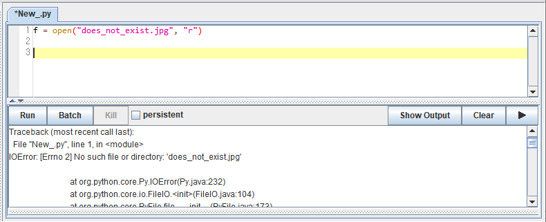
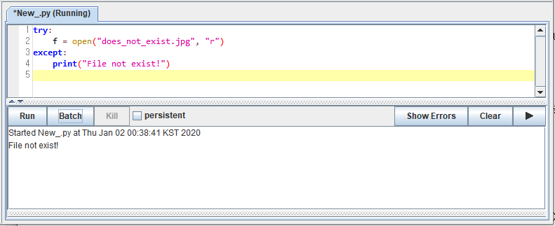
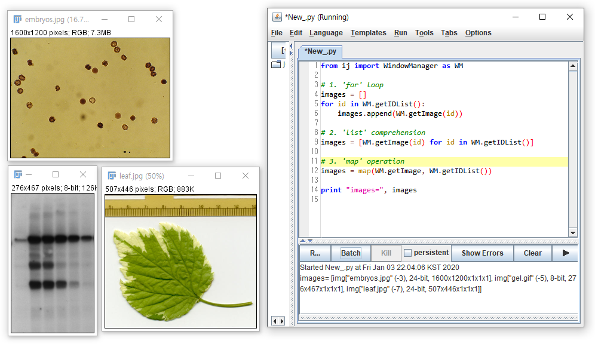
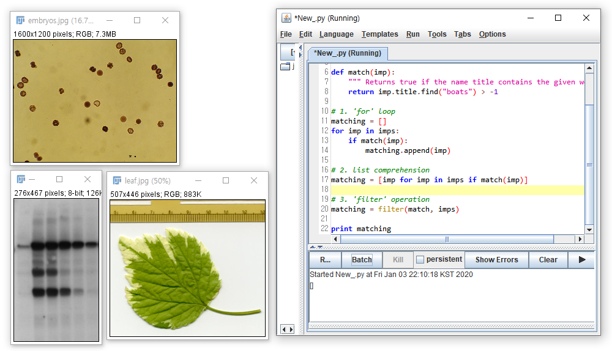
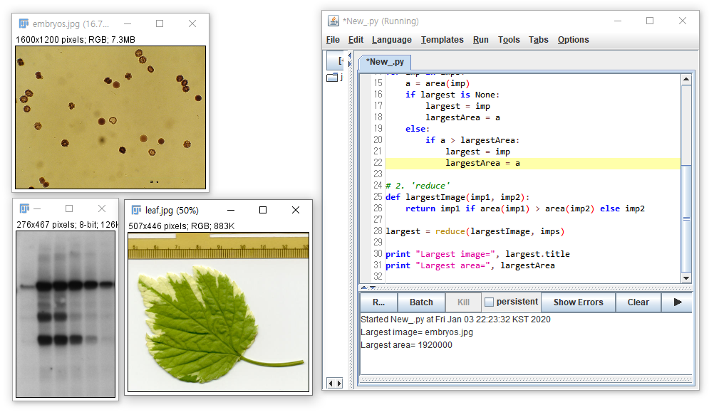

4.1. Python 문법을 공부하는 이유
ImageJ에서 활용하는jython은Java Virtual Machine (JVM)위에서python을 구현한 것입니다.- 주로 web 환경에 많이 사용되는
JVM과python의 연동이 자유로워Java Class와.jar파일을 아무런 변환이나 노력 없이 그대로 끌어다 사용할 수 있다는 장점이 있습니다.ImageJ의 개발자들 역시Java로 제작해둔 라이브러리를python명령어를 이용해 활용할 수 있게 하기 위해jython을 택했다고 보입니다. ImageJ의jythonscript는java라이브러리를 불러오지만python문법으로 실행합니다.python문법 전체를 모두 담을 수는 없지만ImageJscript를 작성하고 이해하는 데 필요한 기본 명령어를 정리했습니다.python문법과 체계가 더 알고싶다면 아래의 점프 투 파이썬 링크를 참조하시기 바랍니다. 본문의 많은 예제를 점프 투 파이썬에서 인용했습니다.
Reference
Jython Runner’s Home
Definite Guide to Jython
점프 투 파이썬
A Fiji Scripting Tutorial #3. Inspecting properties and pixels of an image
SUNGJIN’s BLOG
4.2. import: 모듈 불러오기
우리는 집 안에서 비바람을 피할 뿐 아니라 식사, 빨래, 게임, TV와 인터넷 사용 등 많은 일을 하지만 집 자체가 이러한 기능들을 제공하는 것은 아닙니다. 집은 텅 빈 공간일 뿐이고, 여기에 밥솥, 전자렌지, 냉장고, 식기가 들어와야 부엌이 갖추어지고 세탁기와 건조기가 들어와야 빨래를 하고 건조를 시킬 수 있습니다.
앞서 설치한
miniconda(anaconda)는 상하수도와 전기, 가스만 붙어있는 텅 빈 집이나 마찬가지입니다.빈 집에서 모든 가전제품을 스스로 만들 수도 있겠지만, 그것보다 판매되는 제품을 구매하는 것이 훨씬 경제적입니다. 이렇게 다른 사람이 만든 모듈을 불러오는 과정을
import라고 합니다.이처럼 특정 기능을 구현해놓은 것을 부르는 이름으로
module,package,library가 있습니다. 세세하게 분류하는 분도 있습니다만 사용자 입장에서는 많은 경우 혼용해서 사용하며, 의사소통상 큰 무리는 없습니다.
4.2.1. 모듈 전체를 불러오기
모듈 안에는 함수와 같은 기능이 여럿 포함되어 있을 수 있습니다.
모듈 전체를 불러올 때는 다음과 같이 불러옵니다.
1
import [모듈 이름]
module1이라는 모듈에 두 수의 합을 출력하는sumf()라는 함수가 있다면, 다음처럼 사용할 수 있습니다.1
2
3import module1
ans = module1.sumf(3, 4) # ans 변수에 3 + 4 = 7 저장됨.함수를 부를 때마다
module1.을 매번 앞에 써줘야 하기 때문에 번거롭습니다.module1대신m1이라고 부르기로 하겠습니다.1
2
3import module1 as m1
ans = m1.sumf(3, 4) # ans 변수에 3 + 4 = 7 저장됨.import [모듈 이름] as [짧은 이름]형식을 사용해서 번거로움을 줄일 수 있습니다.
4.2.2. 함수를 따로 부르기
함수를 사용하기 위해서 모듈 이름을 매번 부르는 것은 귀찮은 일입니다.
from [모듈 이름] import [함수 이름]을 이용해서 함수 이름만 사용할 수 있습니다.1
2
3from module1 import sumf
ans = sumf(3, 4) # ans 변수에 3 + 4 = 7 저장됨.함수 이름도 짧게 줄일 수 있습니다.
1
2
3from module1 import sumf as sf
ans = sf(3, 4) # ans 변수에 3 + 4 = 7 저장됨.모듈에 함수가 여럿 있고 이들을 모두 부르고 싶다면
from [모듈 이름 ] import *을 사용하면 됩니다.※ 주의 ※ 여러
module을 이렇게 부르면, 함수 이름이 겹칠 때 마지막 함수만 사용 가능합니다.
4.3. print: 출력하기
계산 결과나 문자열을 출력할 때 사용하는 함수입니다.
python을 최근에 3.x 버전으로 학습하신 분은print()명령으로 알고 계실 테지만,jython은 기본적으로python 2.7버전을 사용하기 때문에print [출력 내용]을 사용합니다.특이하게도
python3.x 버전의print()형식도 지원하지만, 간혹 출력이 깔끔하지 못한 경우가 있으니 2.7 버전의 사용법을 익숙하게 합시다.1
2
3
4a = 3.141592
print a # a 내용 출력: "3.141592"
print 'a' # 문자 a를 출력: "a"
print 'a=', a # 문자열과 a의 내용을 붙여서 출력: "a= 3.141592"%를 사용해서 출력 형식을 지정할 수 있습니다.1
2
3
4
5
6
7
8
9a = 3.141592
print '%d' % a # 정수형으로 출력합니다: "3"
print '%3d' % a # 총 3자리 정수를 출력, 빈 자리에 빈칸을 출력합니다: " 3"
print '%03d' % a # 총 3자리 정수를 출력, 빈 자리에 0을 붙입니다: "003"
print '%f' % a # 소수형으로 출력합니다: "3.141592"
print '%1.3f' % a # 소수점 3자리까지만 출력합니다: "3.142"
print '%7.3f' % a # 총 7글자, 소수점 3자리까지만 출력합니다: " 3.142"
print '%07.3f' % a # 총 7글자, 소수점 3자리까지 빈칸을 0으로 출력합니다: "003.142"줄 바꿈 문자(
\n), 탭 문자(\t) 등을 사용해서 간단한 틀에 맞춘 출력을 할 수 있습니다.1
2
3
4
5print 'The answer is : %d\t(%1.2f)\nOthers are wrong!' % (1, 3.141592)
# 실행결과:
# The answer is 1 : (3.14)
# Others are wrong!
4.4. if, elif, else: 조건문
특정 조건을 만족하는 부분만 처리하는 등, 조건에 행동을 다르게 할 때 사용합니다.
if [조건]:밑에 조건을 만족할 때 실행할 행동을 들여쓰기를 해서 작성합니다.1
2
3if 조건문:
수행할 문장1
수행할 문장2if조건을 만족하지 않을 경우 실행할 행동을else문에 넣어줍니다.1
2
3
4
5
6
7
8money = True
if money:
print "Taxi!"
else:
print "Walk!"
# 실행결과:
# Taxi!이렇게 해서 결과를 비교해 봅니다.
1
2
3
4
5
6
7
8money = False
if money:
print "Taxi!"
else:
print "Walk!"
# 실행결과:
# Walk!조건문은 비교연산자로 표현할 수도 있습니다.
| 비교연산자 | 설명 |
|---|---|
| x < y | x가 y보다 작으면 참 |
| x > y | x가 y보다 크면 참 |
| x == y | x와 y가 같으면 참 |
| x != y | x와 y가 같지 않으면 참 |
| x <= y | x가 y보다 작거나 같으면 참 |
| x >= y | x가 y보다 크거나 같으면 참 |
and,or,not연산자도 있습니다.
| 연산자 | 설명 |
|---|---|
| x or y | x와 y 중 하나만 참이면 참 |
| x and y | x와 y 모두 참이어야 참 |
| not x | x가 거짓이면 참이다 |
여러 조건이 있는 경우
elif로 조건을 추가할 수 있습니다.elif는if와else사이에 여러 개가 올 수 있지만 위에서부터 순차적으로 조건을 검토해서 적용하는 것을 유념해야 합니다.1
2
3
4
5
6
7
8
9
10money = 3000
if money > 10000:
print "Taxi!"
elif money > 1000:
print "Bus!"
else:
print "Taxi!"
# 실행결과:
# Bus!if,elif,else는 여러 층으로 적용할 수 있습니다.1
2
3
4
5
6
7
8
9
10
11
12pocket = ['paper', 'handphone']
card = True
if 'money' in pocket:
print 'Taxi!'
else:
if card:
print '택시를 타고 가라'
else:
print '걸어가라'
# 실행결과:
# 택시를 타고 가라
4.5. try, except, else, finally : 예외 처리
프로그램 구동 중 발생하는 예외 상황을 처리하기 위한 명령어입니다.
아래의 예를 봅시다. 존재하지 않는 파일을 열려고 하다 에러가 나는 경우입니다.
- 이와 같이 에러가 발생하면 프로그램이 중단되기 때문에 목적을 달성할 수 없습니다.
- 다른 명령을 실행하거나 적어도 원인을 이해하기 쉽도록 알려줘야 합니다.
파일이 존재하지 않으면
File not exist!라는 메시지를 출력합니다.
- 번외로, 위 예제에서
python2.x 버전의print 내용대신 3.x 버전의print(내용)을 사용했음에도 정상 출력되었음을 확인할 수 있습니다.
- 번외로, 위 예제에서
try에 있는 명령을 먼저 실행하고, 에러와 같은 예외 상황이 발생하면except에 있는 내용이 실행됩니다. 그리고finally가 있다면, 예외 상황 발생 여부와 관계없이finally가 실행됩니다.
4.5.1. try + except
기본 구조는 다음과 같습니다.
1
2
3
4try:
실행을 시도할 명령
except [발생 오류]:
try 절이 실패했을 때 실행할 명령- 위 예에서 파일이 없을 때
IOError가 발생했기 때문에 다음과 같은 처리가 가능합니다.1
2
3
4
5
6
7try:
f = open("does_not_exist.jpg", "r")
except IOError:
print("File not exist!")
# 실행결과
# File not exist! IOError를 붙이면IOError에print문이 반응하지만 다른 종류의 에러에는except절이 작용하지 않습니다.- 예를 들어
3/0같은 상황이 발생했다면,ZeroDivisionError가 발생하기 때문에IOError에 반응하는 위except절을 건너뛰고 에러를 발생시키며 프로그램이 종료됩니다.
- 위 예에서 파일이 없을 때
오류 종류에 따라
except처리를 다르게 하고 싶다면 다음과 같이 합니다.1
2
3
4
5
6try:
실행을 시도할 명령
except [발생오류 1]:
try 절이 [발생오류 1]로 실패했을 때 실행할 명령
except [발생오류 2]:
try 절이 [발생오류 2]로 실패했을 때 실행할 명령오류 메시지를 다음 실행의 입력으로 활용할 수도 있습니다.
1
2
3
4
5
6
7
8
9try:
f = open("does_not_exist.jpg", "r")
except IOError as e:
print '(1)', e
print '(2) Error message is: ' + str(e).split(':')[0]
# 실행결과
# (1) [Errno 2] No such file or directory: 'does_not_exist.jpg'
# (2) Error message is: [Errno 2] No such file or directory(1):IOError로 출력되는 오류 메시지 전체를 변수e에 담아 그대로 출력할 수도 있고,(2): 에러 설명에 해당하는 부분만 떼어서 독자적인 메시지를 출력할 수도 있습니다.
4.5.2. try + except + else
except가 에러를 만났을 때 발동되는 절이라면,else는 에러가 없을 때 발동되는 절입니다.1
2
3
4
5
6try:
실행을 시도할 명령
except [발생오류]:
try 절이 [발생오류]로 실패했을 때 실행할 명령
else:
try 절이 성공적으로 수행돼서 except로 안넘어갔을 때 실행할 명령
4.5.3. try (+ except + else) + finally
finally절은try문 수행 도중 발생한 예외 상황에 관계 없이 수행됩니다.- 열어둔 파일을 닫거나 할 때 많이 사용합니다.
1
2
3
4
5
6
7f = open('foo.txt', 'w')
try:
실행을 시도할 명령
except [발생 오류]:
try 절이 실패했을 때 실행할 명령
finally:
f.close()
4.5.4 pass
- 특정 오류가 발생해도 실행에 지장이 없는 경우, 그냥 넘어가라고 해야 합니다.
- 이럴 때
pass를 사용합니다.1
2
3
4try:
f = open("does_not_exist.jpg", "r")
except IOError:
pass
4.6. for, while : 반복문
- 때로는 동일한 명령을 반복적으로 처리해야 할 경우가 있습니다.
- 반복수행 수가 적을 때는 일일이 명령을 실행할 수도 있지만 수가 많아지면 명령을 한 줄 한 줄 작성하기 어렵기 때문에 반복문을 사용합니다.
4.6.1. for
for문은 이어지는 리스트의 원소들을 차례로 대입하며 아래 문장을 실행합니다.리스트 대신 튜플이나 문자열이 올 수 있습니다.
1
2
3
4
5
6
7
8test_list = ['one', 'two', 'three']
for i in test_list:
print i
# 실행결과:
# one
# two
# threefor문의 원소로 튜플을 사용하여 동시의 여러 변수를 받아들일 수 있습니다.1
2
3
4
5
6
7
8a = [(1,2), (3,4), (5,6)]
for (first, last) in a:
print first + last
# 실행결과:
# 3
# 7
# 11
4.6.1.1. for + continue
for문을 수행하는 도중continue를 만나면 이후를 실행하지 않고for문의 처음으로 돌아갑니다.- 아래 예시에서는 60점 이상인 사람에게만 축하메시지를 보냅니다.
1
2
3
4
5
6
7
8
9
10
11
12
13marks = [90, 25, 67, 45, 80]
number = 0
for mark in marks:
number = number + 1
if mark < 60:
continue
print "Congratulations! passed with %d" % number
# 실행결과:
# Congratulations! passed with 90
# Congratulations! passed with 67
# Congratulations! passed with 80
4.6.1.2. for + list comprehension
리스트 안에
for문을 포함하는listcomprehension을 사용하면 매우 효과적이 됩니다.형식은
[표현식 for 항목 in 반복가능객체 if 조건문]이며,조건문을 만족하는 객체의 항목에 표현식을 적용하라는 의미입니다.1
2
3
4
5
6
7
8
9a = [1,2,3,4]
result = []
for num in a:
result.append(num * 3)
print result
# 실행결과:
# [3, 6, 9, 12]위 코드는 아래와 같이 표현할 수 있습니다.
1
2
3
4
5
6
7a = [1,2,3,4]
result = [num* 3 for num in a]
print result
# 실행결과:
# [3, 6, 9, 12]
for문을 2개 이상 사용하는 것도 가능합니다.1
2
3
4[표현식 for 항목1 in 반복가능객체1 if 조건문1
for 항목2 in 반복가능객체2 if 조건문2
...
for 항목n in 반복가능객체n if 조건문n]- 구구단의 모든 결과를 다음과 같이 표현할 수 있습니다.
1
2
3
4
5
6
7
8
9
10result = [x*y for x in range(2, 10)
for y in range(1, 10)]
print result
# 실행결과:
# [2, 4, 6, 8, 10, 12, 14, 16, 18, 3, 6, 9, 12, 15, 18, 21, 24, 27, 4, 8, 12, 16,
20, 24, 28, 32, 36, 5, 10, 15, 20, 25, 30, 35, 40, 45, 6, 12, 18, 24, 30, 36, 42
, 48, 54, 7, 14, 21, 28, 35, 42, 49, 56, 63, 8, 16, 24, 32, 40, 48, 56, 64, 72,
9, 18, 27, 36, 45, 54, 63, 72, 81]
- 구구단의 모든 결과를 다음과 같이 표현할 수 있습니다.
4.6.1.3. for + break
break는 특정 조건을 만났을 때forloop을 강제 종료시키는 명령어입니다.- 불필요한 작업을 반복하는 것을 방지합니다.
1
2
3
4
5
6
7
8
9
10
11
12for a in range(0, 5):
print a
if a == 3:
break
else:
print "else statement is called."
# 실행결과:
# 0
# 1
# 2
# 3range()함수에 의해 0부터 4까지 숫자들을 차례로 a에 대입하여 출력하다가 a가 3일 때break를 만나 실행이 중단되고forloop 밖으로 빠져나왔습니다.
4.6.1.4. for + else
위 코드에서 맨 마지막에
else명령이 있는데 실행되지 않았습니다.for뒤에 붙은else는for에서break가 실행되지 않았을 때 실행됩니다.1
2
3
4
5
6
7
8
9
10
11
12
13
14
15for a in range(0, 5):
print a
if a == 6:
break
else:
print "else statement is called."
# 실행결과:
# 0
# 1
# 2
# 3
# 4
# else statement is called.range()에 의해 a에 0부터 4까지 대입되고 출력되었으나break의 조건이 a == 6 이기 때문에break는 발동되지 않았습니다.break없이forloop이 완료되었으므로 이후에 있는else가 실행됩니다.
forloop에서 탐색하는 범위에서 조건을 만족시키지 않았을 경우 동작을 지정할 일이 있는데, 이럴 경우에else명령을 사용하면 코드를 간결하게 작성할 수 있습니다.
4.6.2. while
4.6.2.1. 기본 사용법
while문도for문과 비슷하게 반복수행을 실시합니다.for문은 리스트나 튜플 등의 원소를 하나씩 건너가면서(iterate) 하단의 명령에 대입하는 것이 기본인데 반해while문은 조건문이 참을 만족하는 동안 동일 명령을 계속 수행하는 것이 차이점입니다.1
2
3
4while [조건문]:
[수행할 문장1]
[수행할 문장2]
...“열 번 찍어 안 넘어가는 나무 없다”는 속담을
for문과while문으로 만들면 다음과 같습니다.for:treehit에 0부터 9까지 차례로 대입하면서 실행합니다.1
2
3for treehit in range(10):
print "Tree hit by %d times." % (treehit + 1)
print "Tree fall!"while:treehit을 1씩 수동으로 증가시켜줘야 합니다.1
2
3
4
5treehit = 0
while treehit < 10:
treehit = treehit + 1
print "Tree hit by %d times." % treehit
print "Tree fall!"위의 두 코드는 모두 동작을 하고 동일한 결과를 출력합니다.
1
2
3
4
5
6
7
8
9
10
11
12# 실행결과
# Tree hit by 1 times.
# Tree hit by 2 times.
# Tree hit by 3 times.
# Tree hit by 4 times.
# Tree hit by 5 times.
# Tree hit by 6 times.
# Tree hit by 7 times.
# Tree hit by 8 times.
# Tree hit by 9 times.
# Tree hit by 10 times.
# Tree fall!treehit이 9가 될때까지 반복문을 수행하고treehit가 10이 되는 순간 반복문을 중단하고 맨 마지막줄이 실행되는데,for문은 반복문에서 실행될 횟수가 정해진 반면while은 조건문을 만족할 때까지 무한히 실행되는 특징이 있어 무한루프에 빠지기 쉬우니 주의해야 합니다.
4.6.2.2. while + break: while문 강제 중단
평소엔 지시된 명령을 수행하다가 특정 조건을 만족할 때 중단이 필요할 때가 있습니다.
예를 들면 자동판매기에 돈을 넣고 금액이 허락하는 최대한의 커피를 뽑고자 할 때, 돈이 부족해지거나 커피가 부족하면 중단을 시켜야 합니다.
커피가 10잔 장전된 커피 자동판매기에 1000원을 넣고 커피를 뽑는 경우, 다음과 같이 코드를 작성할 수 있습니다.
1
2
3
4
5
6
7
8
9
10
11
12
13
14
15
16
17
18
19
20
21
22
23
24
25coffee = 10 # 장전된 커피의 양
money = 1000 # 투입한 금액
while True:
if money == 300:
print("Coffee is served.")
coffee = coffee -1
elif money > 300:
money -= 300
print("Coffee is served. Change is %d." % money)
coffee = coffee -1
else:
print("> Money is not enough. Money is returned.")
print("> Remaining amounnt of coffee is %d." % coffee)
break
if coffee == 0:
print("> Sorry. Ran out of coffee.\nStop selling.")
break
# 실행결과
# Coffee is served. Change is 700.
# Coffee is served. Change is 400.
# Coffee is served. Change is 100.
# > Money is not enough. Money is returned.
# > Remaining amounnt of coffee is 7.- 위 코드에는 크게 두 개의
if절이 있습니다. 상단의if-elif-else로 이어지는if절은 투입 금액(money)의 경우에 따른 동작을 기술하고 있고 하단의if coffee==0:부분은 커피가 다 떨어졌을 때의 메시지를 담고 있습니다. - 두 경우에 모두
break가 있는데 돈이 부족하거나 커피가 부족할 경우 동작을 중단하라는 명령입니다. - 둘 중 하나라도
break가 없는 경우, 각각의 경우에 대해 프로그램이 종료되지 않는 무한루프로 빠져듭니다.
- 위 코드에는 크게 두 개의
break는for문도 강제 중단시킬 수 있습니다.
4.6.2.3. while + continue: while문의 맨 처음으로 돌아가기
-
continue는for문에 사용되었을 때와 마찬가지로while문에 사용되었을 때도 맨 처음 부분으로 돌아갑니다. - 사용 방법은
for문과 함께 사용할 때와 동일합니다. - 1부터 10까지의 숫자 중에서 홀수만 출력하는 것을
while과continue로 구현한 예제입니다.1
2
3
4
5
6
7
8
9
10
11
12
13a = 0
while a < 10:
a = a + 1
if a % 2 == 0:
continue
print a
# 실행결과
# 1
# 3
# 5
# 7
# 9a % 2는 a를 2로 나누었을 때의 나머지를 구하는 명령입니다.a % 2 == 0으로 짝수인 a를 찾고, 이 때continue명령으로 다시 while문의 시작으로 돌아가print a가 실행되지 않습니다.
4.7. map, reduce, filter, lambda: 내장 함수
python은 효과적인 프로그래밍을 위해 내장함수를 제공합니다.for나while을 사용하면 길어지는 반복문을map,reduce,filter를 이용해서 짧게 구현할 수 있으며,def를 통해 함수를 길게 수행하는 대신lambda를 이용하여 일회용 함수를 간단하게 구현할 수 있습니다.
4.7.1. map
map(f, iterable)은 함수(f)와 반복 가능한(iterable) 자료형을 입력으로 받습니다.map은 입력받은 자료형의 각 요소를 함수f가 수행한 결과를 묶어서 돌려줍니다.입력받은 리스트에 2를 곱하는 함수를
def문으로 만들면 다음과 같습니다.1
2
3
4
5
6
7
8
9
10
11def two_times(numbers):
result = []
for number in numbers:
result.append(number * 2)
return result
result = two_times([1,2,3,4])
print result
# 실행결과
# [2,4,6,8]- 위 함수는
map함수를 이용하면 다음과 같이 바꿀 수 있습니다.1
2
3
4
5
6
7
8
9def two_times(x):
return 2*x
result = map(two_times, [1,2,3,4])
#result = list(map(two_times, [1,2,3,4]))도 같은 결과를 도출합니다.
print result
# 실행결과
# [2,4,6,8]
- 위 함수는
4.7.2. lambda
lambda는 한 줄로 함수를 간결하게 만들고 사용할 때 사용합니다.1
lambda [매개변수1], [매개변수2], ... : 매개변수를 이용한 표현식
다음의
def로 만든 함수와lambda로 만든 함수는 동일한 작업을 합니다.lambda함수는return없이 동작합니다.1
2
3
4
5
6
7
8
9
10
11
12# def
def add(a,b):
return a+b
# lambda
add = lambda a, b: a+b
result = add(3, 4)
print result
# 실행결과
# 7map과lambda를 결합하면 위의two_times함수를 한 줄로 줄일 수 있습니다.1
2result = map(lambda x: 2*x, [1,2,3,4])
print result
4.7.3 filter
filter(f, iterable)은 함수(f)와 반복 가능한(iterable) 자료형을 입력으로 받습니다.map과 비슷하지만, 함수f의 결과를 참(True)로 만드는 결과만을 돌려줍니다.1
2
3
4
5
6
7
8
9
10def positive(numbers):
result = []
for number in numbers:
if i > 0:
result.append(i)
return result
print positive([1,-3,2,0,-5,6])
# 실행결과
# [1, 2, 6]- 위 함수는
filter를 사용하면 다음과 같이 표현될 수 있습니다.
1
2
3
4def positive(x):
return x > 0
print filter(positive, [1,-3,2,0,-5,6])lambda를 함께 사용하면 이렇게 됩니다.
1
print filter(lambda x: x>0, [1,-3,2,0,-5,6])
- 위 함수는
4.7.4. reduce
reduce도 함수와 반복가능한 자료형을 입력으로 받습니다.옵션으로 세 번째 인자를 받을 수 있으며, 의미는 연산의 초기값입니다.
리스트가 아니라 단일 값을 돌려준다는 점에서
map,filter와의 차이가 있습니다.함수
f와 리스트[a1, a2, a3]이 인자로 주어진다면 입력과 결과는 다음과 같습니다.1
reduce(f, [a1, a2, a3])
= $ f(f(a1, a2), a3) $
- 여기에 초기값
a0이 인자로 주어진다면 입력과 결과는 다음과 같습니다.
1
reduce(f, [a1, a2, a3], a0)
= $ f(f(f(a0, a1), a2), a3) $
- 여기에 초기값
lambda로 구현한 함수f(x, y) = x + y를 이용해 1부터 5까지의 합을 구하는 예시입니다.1
2
3
4print reduce(lambda x, y: x+y, [1, 2, 3, 4, 5])
# 실행결과
# 15filter함수를 이용해 리스트의 최대값을 구하는 예시입니다.1
2
3
4
5func = lambda a, b: a if (a>b) else b
print reduce(func, [34, 76, 29, 96, 68])
# 실행결과
# 96
4.8. ImageJ 응용
for,listcomprehension,map,filter,reduce를 이용해서ImageJ에서 이미지 데이터를 다루어 보겠습니다.ImageJ의 모듈과 기능에 대한 상세한 설명은 추후에 이어지는 글에서 하기로 하고, 여기서는python기본 함수 활용 사례에만 집중하겠습니다.
4.8.1. map: 떠 있는 이미지의 파일명 수집
1 | from ij import WindowManager as WM |

4.8.2. filter: 떠 있는 이미지 중 찾는 파일이 있는지 확인
1 | from ij import WindowManager as WM |

4.8.3. reduce: 떠 있는 이미지의 넓이 계산
1 | # reduce |
